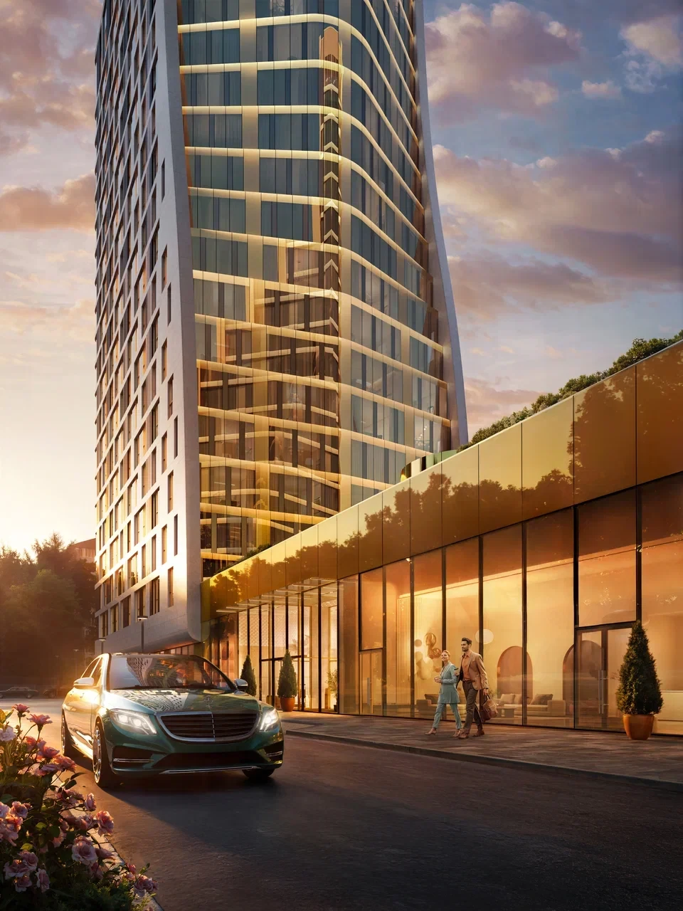
Лот 01Семейный
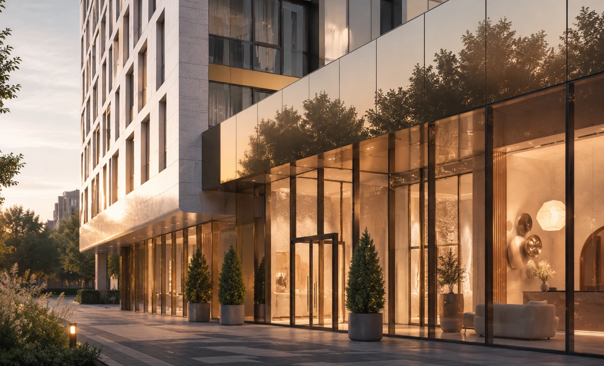
01 / О проекте
Камерный проект у Воробьёвых гор — с приватным двором, выразительной архитектурой и сервисом для жителей.
02 / Концепция
Вавилова 64 — новый жилой комплекс премиум-класса в Гагаринском районе Москвы, рядом с главным зданием МГУ и парком Воробьёвы горы.
Архитектура Филиппа Никандрова соединяет ритм натурального камня, панорамное остекление и скульптурный силуэт двух корпусов.
03 / Окружение
Ближайшая инфраструктура:
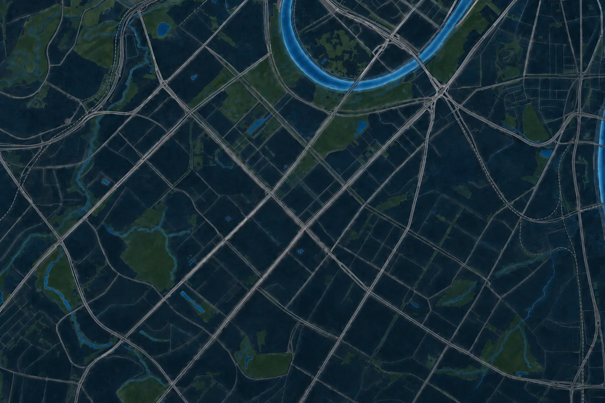
04 / Галерея
05 / Продажа

Лот 01Семейный
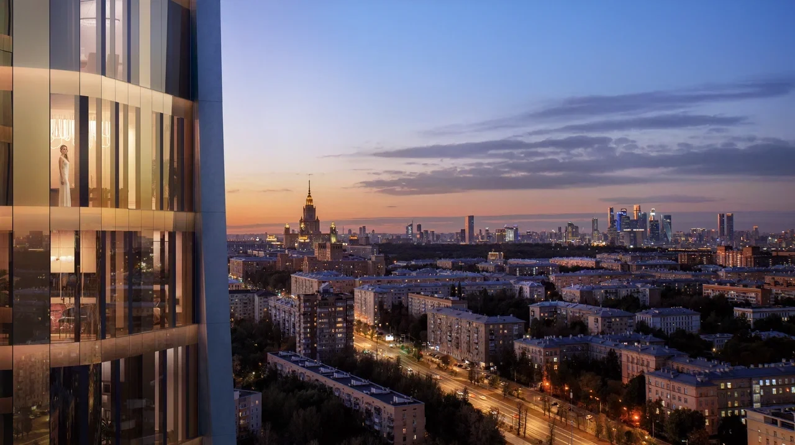
Лот 02Верхний этаж
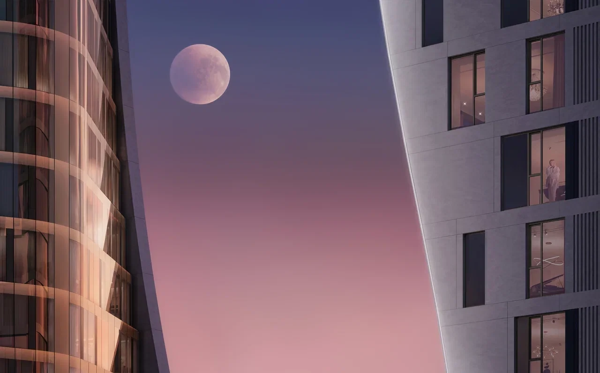
Лот 03Редкий лот
06 / Финансы
Рассчитайте ориентировочный
ежемесячный платёж
07 / Архитектура
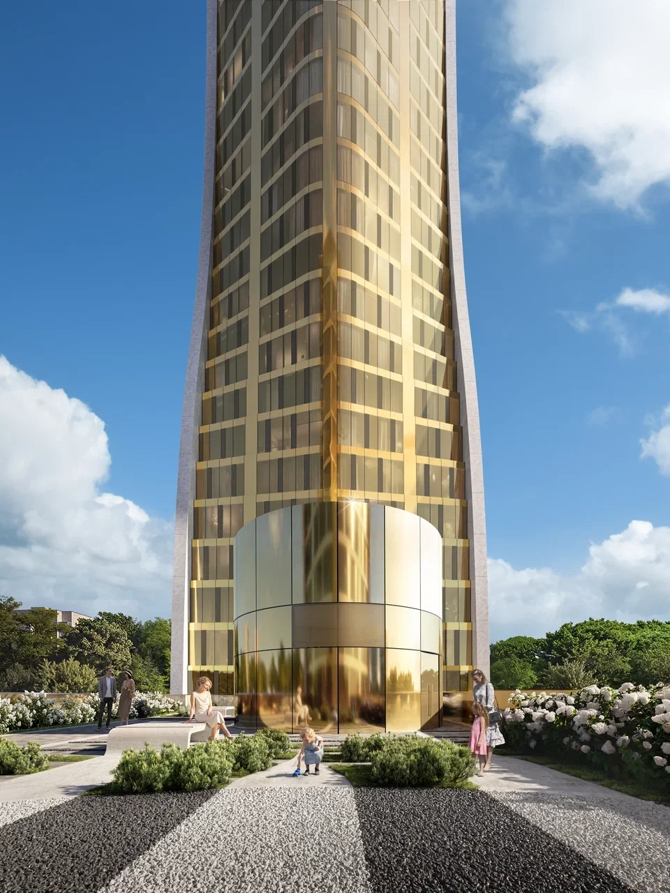
Филипп НикандровАрхитектурную концепцию разработал Филипп Никандров. Два корпуса формируют выразительный силуэт и защищённый внутренний двор.
08 / Девелопер
Городская среда, которая начинается с дома
Компания СИТИ21 работает на рынке с 1997 года и специализируется на создании миниполисов в Москве и Московской области. В портфеле девелопера более 60 реализованных проектов общей площадью около 680 тысяч квадратных метров.
Перейти на страницу застройщика ↗09 / Для жителей
Всё необходимое
для вашего ритма
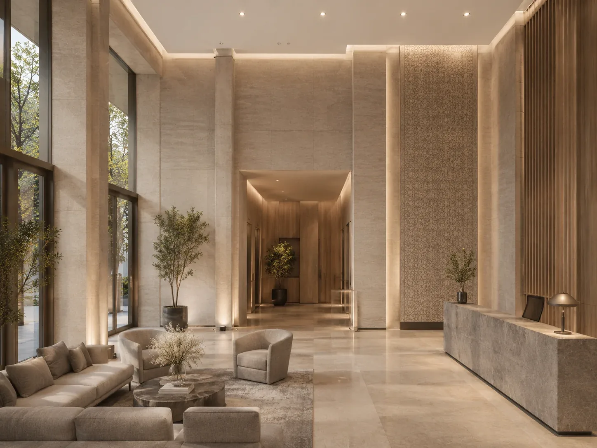
Библиотека, переговорная и сервис на первом этаже.
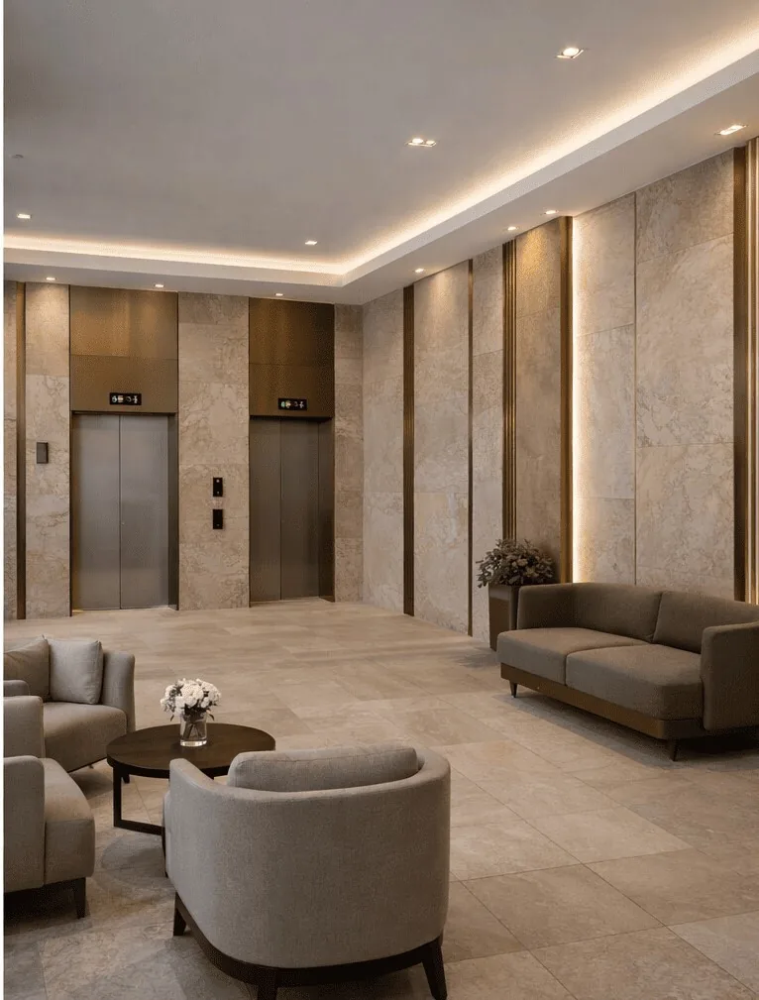
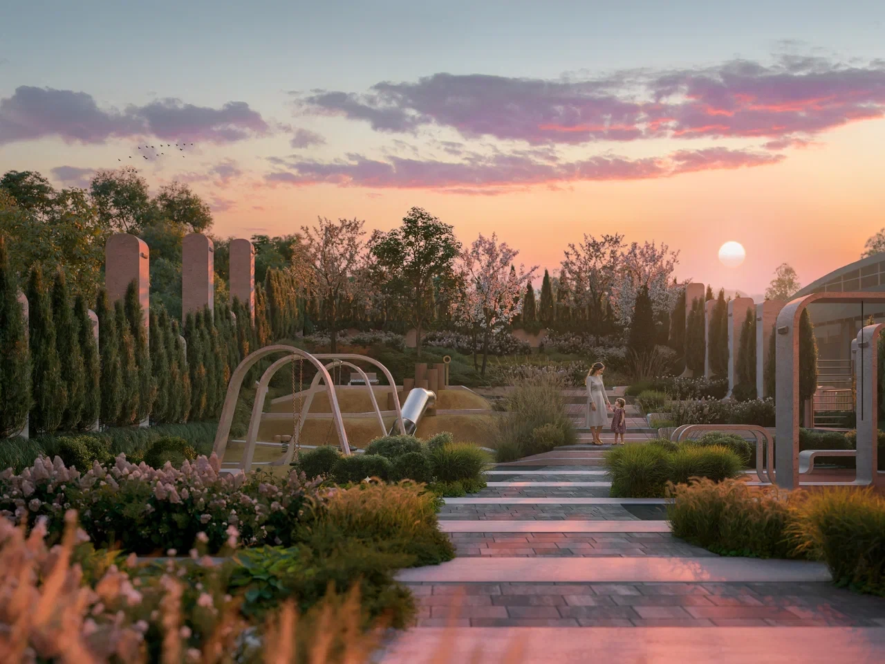
10 / Динамика
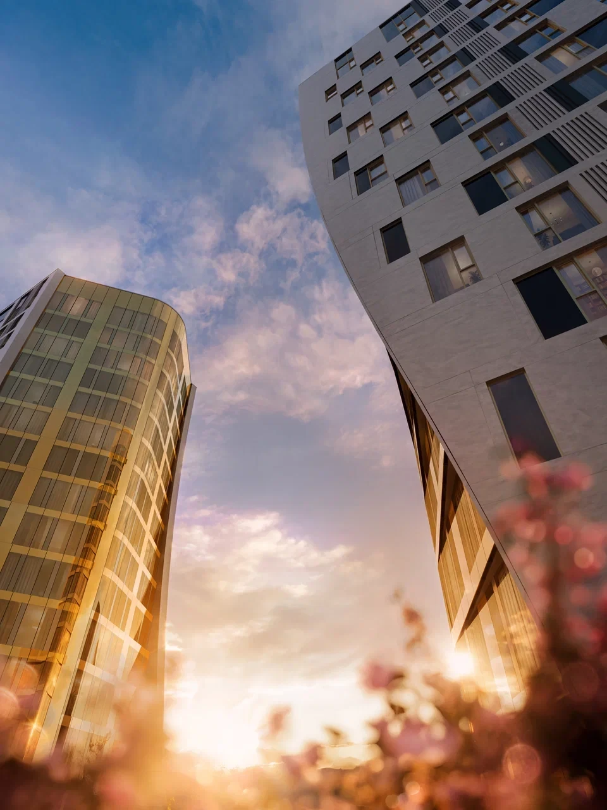
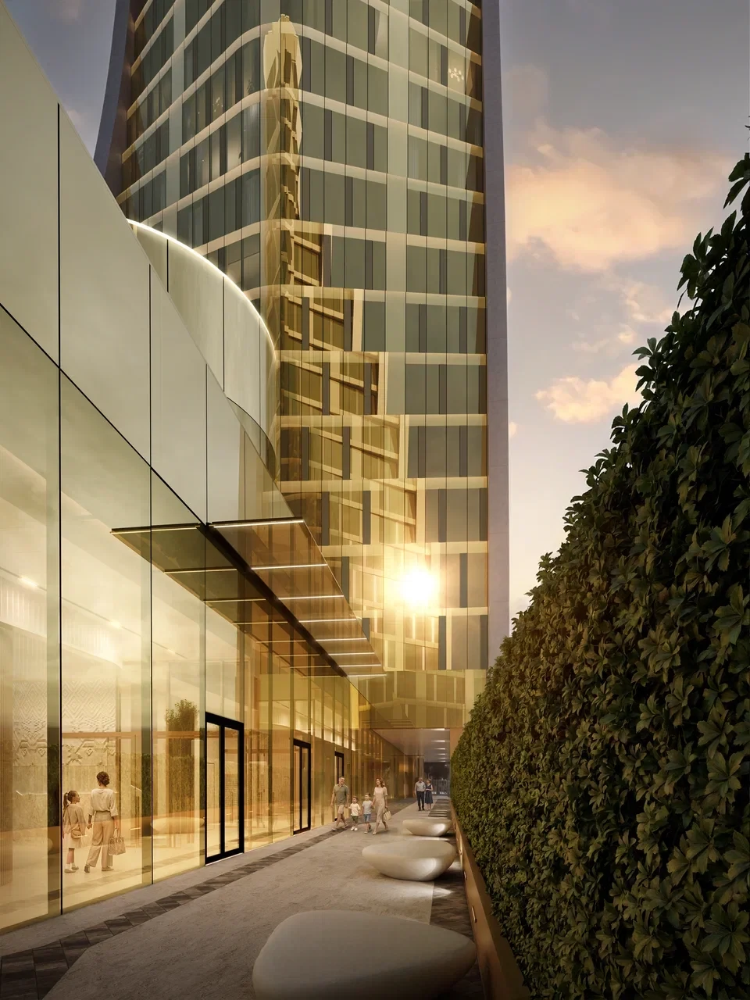
12 / BARNES Moscow
“Ирина Цивирко — настоящий профессионал своего дела! Всё было очень оперативно и удобно: просмотр квартиры в наилучшее для нас с мужем время и буквально через пару дней после нашего первого разговора с Ириной.
13 / В этой коллекции
Проект
Проект
Проект
14 / Вопросы и ответы
Как получить подборку квартир в проекте? Оставьте заявку — эксперт BARNES расскажет о доступных лотах и условиях покупки.
Какие площади доступны в проекте? Площади квартир — от 29 до 120 м².
Когда сдача комплекса? Уточнить актуальные сроки можно у специалиста проекта.
Предусмотрены ли парковочные места? Да, в проекте 185 машиномест на двух уровнях.
Есть ли инфраструктура для жителей? Библиотека, переговорная, фитнес-рум и приватный двор.
15 / Личный подбор
Оставьте контакты — эксперт BARNES свяжется с вами и расскажет о проекте.
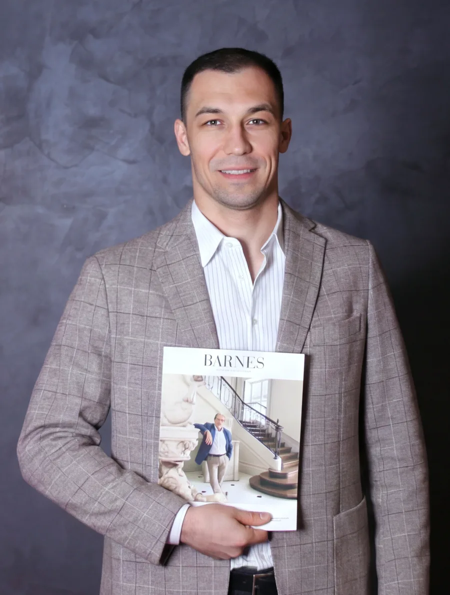